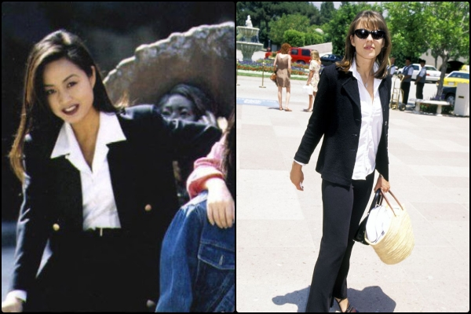

전쟁은 끝났다. 그리고 자유, 반항, 저항의 시대는 지나갔다. 세계는 정보혁명이 본격적으로 시작되었다. 휴대전화, 인터넷, 컴퓨터가 등장하였다. 그리고 디지털, 멀티미디어가 발달하였다. 이러한 기술은 미국에서부터 시작되어 전 세계 모든 사람들이 모든 것을 공유하기 시작했다. 이제 사람들은 여유가 필요했다. 볼거리가 필요했고 휴식이 필요했다. 그 결과라고 해야 할까? 80년대 하위문화를 소비하던 계층은 주 소비계층이 되었고, 기성세대가 되어가기 시작했다. 장발, 형형색색의 컬러, 꽉 끼는 스키니진이 아닌 생활하기 편안한 그리고 보기에 편안한 패션이 주를 이루게 되었다.
